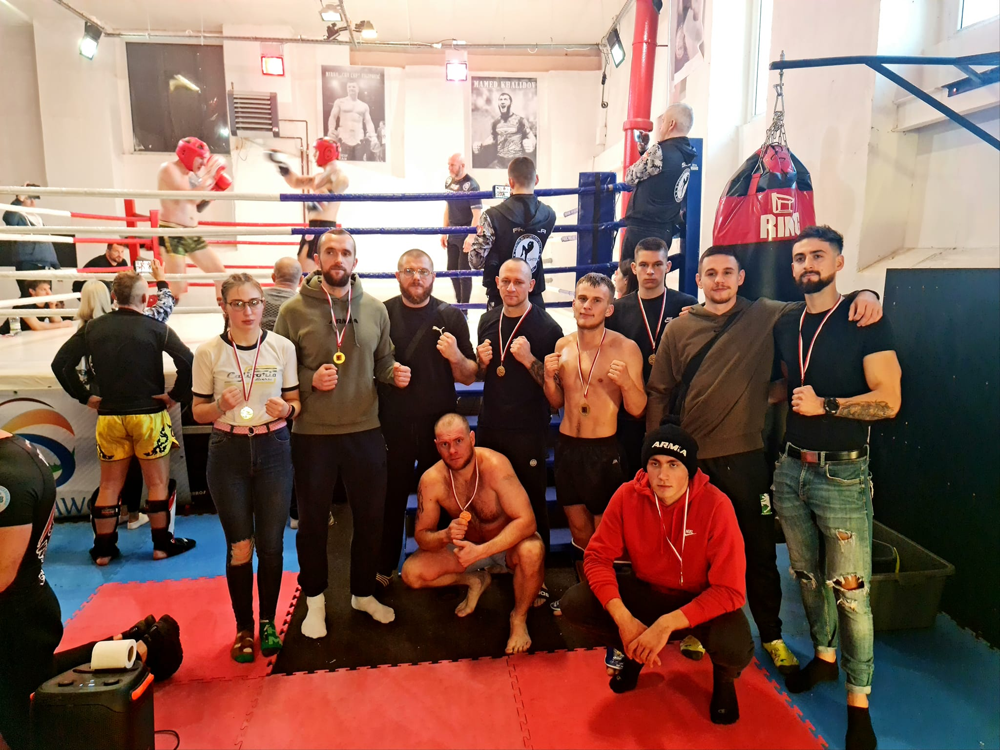

LIGA SPARINGOWA W JAWORZE
Dzisiaj mieliśmy przyjemność uczestniczyć w Jaworskiej lidze sparingowej, organizowanej przez Vorenus Jawor. Byla to świetna okazja do przetarcia się dla wszystkich stawiających pierwsze kroki na ringu. Wszyscy Nasi reprezentanci stanęli na wysokości zadania. Pokazali się z bardzo dobrej strony, prezentując wysokie wyszkolenie techniczne, taktyczne, a także ogromną chęć do walki. Armie reprezentował:
- Mariusz Gaca w swojej pierwszej w życiu walce stanął naprzeciwko młodszego o dwadzieścia lat zawodnika, mającego już na swoim koncie zawodowe walki w MMA. Mariusz bez żadnych obaw wyszedł do ringu dając świetną, wyrównana walkę, w której raz po raz atakował rywala niskimi kopnięciami.
- Mateusz Błaszczyk (Udany debiut przeciwniko zawodnikowi z Fight hobby Legnica, z którym dali mocna walkę)
- Patryk Chmielowiec ( Również ringowy debiut - mimo braku doświadczenia Patryk potrafił w świetny sposób wykorzystać przewagę wzrostu nad cięższym rywalem)
- Tymon Kruczek (Kolejny debiut i kolejny świetny występ. W pierwszej walce w życiu Tymek pokazał bardzo dobre wyszkolenie techniczne)
- Rafał Najwald stoczył dwie walki z cięższymi rywalami i w obu udowodnił, że miesiąca na miesiąc staje się coraz lepszym zawodnikiem. Śmiało mozna powiedzieć, że jego poziom sportowy wyróżniał się na tle rywali.
- Olga Zaworska (Do swojej walki Olga wyszła mocno skupiona i dobrze nastawiona. Walcząc z nieco cięższą rywalką trzymała się ustalonego planu, a w ostatniej rundzie, realizując zalecenia narożnika raz po raz trafiala kolanami na korpus)
- Wiktor Kochkov ( W debiucie trafił na znacznie bardziej doświadczonego rywala. Wiktor postawił jednak twarde warunki próbując zaskoczyć walczącego z odwroteh pozycji rywala)
- Bartek Balik (Siedemnastoletni Bartek zawalczyl z doświadczonym Wiktorem Pęczkiem z Shidokan Jelenia Góra i to właśnie nasz zawodnik wywierał ciagla presje na starszym rywalu)
- Ksawery Tadla ( Najbardziej obyty na ringu dzisiejszy reprezentant Armii stoczył mocną walkę z bardziej doświadczonym reprezentantem Malinowski Team)
